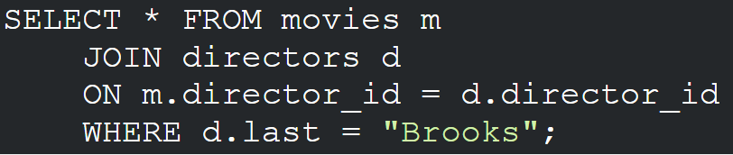
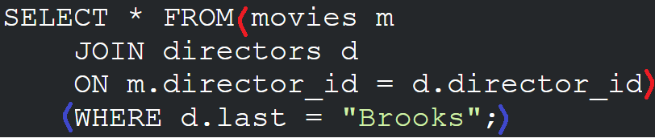

class: center, middle # Unit 2 ## Web Fundamentals --- class: center, middle # [Class 8](https://education.launchcode.org/web-fundamentals/class-prep/8/) Lecture --- ### General Reminders - User Signup due February 4! - This assignment will be used in your final assignment - We will talk more about this later. - Code. With. The. Videos. - Do the studios. - We are halfway through LC101 after today! Congrats! --- class: center, middle ## Studio Solutions ### [Flicklist 5](https://education.launchcode.org/web-fundamentals/studios/flicklist/5/) ### [Databases 1](https://education.launchcode.org/web-fundamentals/studios/databases/1/) --- ### Studio Solutions: - Two choices: - I can post these later - We can do them some other time --- ### Class 8 Topics - More SQL - MAMP Downloaded - More about User Signup --- ### SQL - Do not think linearly. For example, <div class="med-img">  </div> - `JOIN` is first - `WHERE` is next - `SELECT`is last --- ### SQL - Do not think linearly. For example, <div class="med-img">  </div> - `JOIN` is first - `WHERE` is next - `SELECT`is last --- class: center, middle # Questions? --- ### User Signup: How in the heck do I do this?! - WRITE (like, on paper) an outline. For example: - First, get the form to display. - Then, get the POST endpoint working. - Then, deal with validation. - This is not the ONLY 'outline'. Just a suggestion. - Write helper functions to help you if you would like! - `isValidPassword`? `isValidUsername`? Etc. --- ### User Signup: How in the heck do I do this?! - You can breakdown your steps into small pieces, too! -Example: for "get the form to display" - Build app that displays "test" at `localhost:5000/` - Build `base.html` template - Build `form.html` template - Edit our web app to display our `form.html` --- class: center, middle # Questions? --- class: center, middle ## Studio Walkthrough ### [Databases 2](https://education.launchcode.org/web-fundamentals/studios/databases/2/) --- ### Databases 2: Studio Walkthrough - Do it yourself! - The walkthrough is pretty thorough <div style="font-size: 300px; text-align:center;">☺☺☺</div>